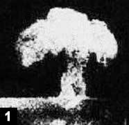

Это реальная фотография лазерного выстрела в роговицу.В своих рекламных материалах хирурги LASIK описывают лазер как "крутой". Так почему же воздух наполняется запахом горящей плоти?
"Во время операции, когда используется лазерная или электрохирургическая установка, при термическом разрушении ткани образуется побочный продукт - дым (шлейф)."; Зрительный мир, 01 февраля
Хирурги и ассистенты хирургов LASIK сообщали о проблемах со здоровьем, связанных с вдыханием газов и частиц, образующихся во время операции.
Там, где есть Дым...
Офтальмологическое лечение
Апрель 2001 года
Устранение лазерного шлейфа LASIK может иметь множество положительных эффектов, в том числе улучшить ваши результаты.
Автор: Кристофер Кент, старший юрист
Выдержки:
Как вы, наверное, знаете, эксимерный лазер был впервые разработан как промышленный лазер, используемый для травления компьютерных чипов. Но техники, которые использовали лазер для этой цели, обнаружили проблему: лазер неправильно протравливал чипы, потому что поднимающийся от чипа столб дыма мешал лазерному лучу. Поэтому они приложили все усилия для разработки вакуумных систем, позволяющих удалять дым как можно быстрее. Благодаря отсутствию дыма они смогли протравить стружку именно так, как было задумано.
Если вы будете сидеть рядом с большинством пациентов, проходящих процедуру LASIK, вы сможете увидеть искры в воздухе над глазом во время абляции. Это вызвано тем, что лазерный луч попадает на частицы в облаке лазерного шлейфа, образующегося при абляции. Это точно такая же проблема, с которой сталкиваются на заводе по производству микросхем, только в данном случае на карту поставлено чье-то видение.
Устранение запаха "горящей плоти" не только приятнее для пациента, но и может избавить вас от неловкости. "Девяносто девять из 100 пациентов не ощущают этого запаха, когда я использую систему Mastel", - говорит доктор Дадли. "После того, как я сказал им, что это "холодный лазер", это избавило меня от необходимости объяснять, почему холодный лазер издает запах гари.
Изучение опасностей, связанных с излучением эксимерного лазера
EyeWorld Июнь 2001
Лиза Б. Самалонис
Выдержки:
В офтальмологии, когда эксимерный лазер воздействует на роговицу, происходит высвобождение тонкого слоя клеток роговицы. Эти клетки образуют слой ткани, который рассеивается в воздухе через несколько секунд после воздействия лазера. Шлейф состоит из обугленных тканей, крови, газов бензола, толуола, формальдегида и полициклических ароматических углеводородов.
В другом случае, о котором сообщалось в 1998 году в журнале EyeWorld, доктор медицины Джеральд Л. Теннант, рефракционный хирург из Техаса, был вынужден уйти на пенсию из-за проблем со здоровьем, которые, по его мнению, могли быть вызваны частицами роговицы, переносимыми по воздуху, или вирусами, содержащимися в шлейфе, генерируемом лазером. У Теннанта развилась идиопатическая тромбоцитопеническая пурпура (ИТП) - редкое заболевание у взрослых, не инфицированных ВИЧ, при котором иммунная система организма вырабатывает антитела, которые атакуют и разрушают тромбоциты. Другой офтальмолог, который предпочитает оставаться анонимным, также развил ИТП с тех пор, как начал использовать эксимерный лазер в 1990 году. "Случаи ИТП среди населения в целом редки", - сказал Теннант. "Подозрителен тот факт, что у двух хирургов, оперированных эксимерным лазером, развивается ИТП после одинакового воздействия. Вот почему я рекомендовал эксимерным хирургам следить за количеством тромбоцитов, пока проблема не будет решена".;
"Большинство офтальмологов знают хирурга LASIK с лазерными легкими", - сказала она, добавив, что многие хирурги страдают астмой и теряют голос.
"Мои сотрудники очень обеспокоены этим; они знают техников LASIK, страдающих хроническим кашлем", - добавила она.
Борьба с хирургическим дымом
EyeWorld Февраль 2001
Лиза Б.Самалонис
Выдержки:
Во время операции, когда используется лазерный или электрохирургический аппарат, при термическом разрушении ткани образуется побочный продукт - дым (шлейф).. В офтальмологии при воздействии эксимерного лазера на роговицу высвобождается тонкий слой клеток роговицы. Эти клетки образуют слой ткани, который рассеивается в воздухе через несколько секунд после воздействия лазера.
Другая проблема заключается в том, что лазерный луч может переносить инфекционные заболевания или вирусы, такие как ВИЧ-СПИД или гепатит. Он сказал, что могут потребоваться годы, чтобы окончательно определить, опасен ли лазерный луч для хирургического персонала. Однако опасность вдыхания дыма от CO2-лазеров описана в дерматологической литературе. "Типичный размер частиц в шлейфе эксимерного лазера составляет порядка 120 нм, что соответствует общему размеру угольной пыли и некоторых соединений, содержащихся в сигаретном дыме. Вполне возможно, что шлейф может также содержать прионы, и последствия вдыхания этого вещества совершенно неизвестны", - сказал Делл.
Узнайте больше о Шлейф LASIK